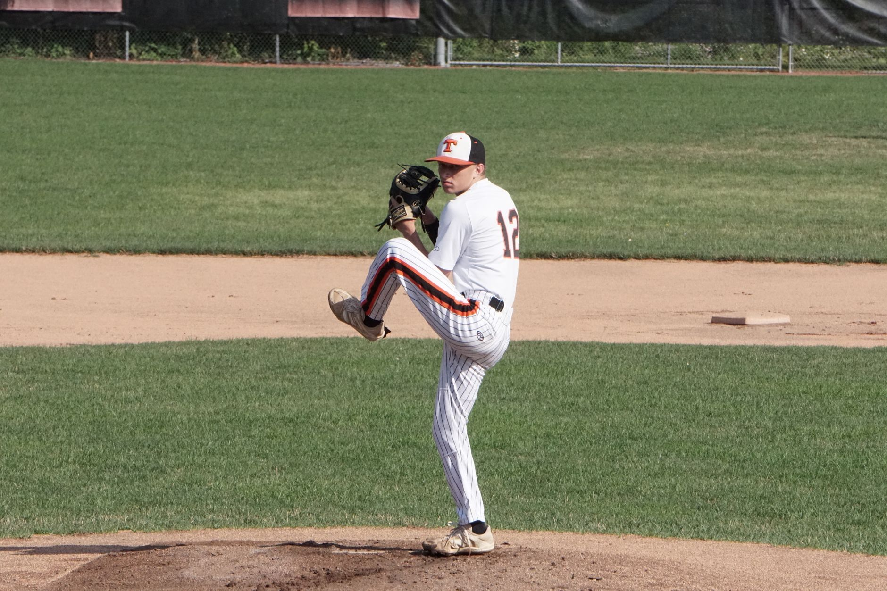

The foundation of a strong pitching stance
Every great delivery begins before the ball even leaves the hand. Your stance sets the stage for balance, timing, and power. A pitcher should stand with their feet roughly shoulder-width apart, ensuring they are centered on the rubber. This position allows for optimal weight distribution, which is critical for the explosive movement required in the next phase.
Focus on your mental and physical readiness during the set position. Keep your shoulders square to the target and your glove tucked in to prevent unnecessary movement. A stable base prevents early momentum shifts that can ruin your accuracy later in the delivery.
Generating power through leg drive and hip rotation
Velocity does not come from the arm; it comes from the ground up. The most important part of baseball pitching mechanics fundamentals is the transition from the rubber to the stride. As you initiate the pitch, you must drive off your back leg, pushing your body toward the plate with purpose.
Power is generated in the legs and transferred through the core, not forced through the shoulder.
As your lead leg moves toward the plate, your hips must rotate forcefully. This hip-shoulder separation is what creates the elastic energy necessary for high-velocity pitching. If your hips and shoulders move together like a single unit, you will lose significant speed and put undue stress on your elbow and shoulder joints.
Arm path and the release point
Once your lower body has provided the momentum, your arm acts as the whip. The arm path should be smooth and repeatable. Avoid 'short-arming' the ball, which refers to keeping the elbow too close to the body. Instead, aim for a high elbow position that allows for a long, efficient arc during the delivery.
The release point is where precision meets power. You want to release the ball at the peak of your arc to maximize downward plane. Consistency in your release point is the difference between a strike and a wild pitch. To improve this, focus on your finger pressure and the snap of your wrist at the moment of impact.
The importance of a controlled follow-through
Many young pitchers make the mistake of stopping abruptly after the ball is released. This sudden deceleration is a primary cause of pitching injuries. A proper follow-through allows the energy generated during the pitch to dissipate naturally through the body, protecting your joints from trauma.
Your body should continue its forward momentum, with your back leg swinging around to help you regain balance. You should end the delivery in a fielding position, ready to react if the batter makes contact. This ensures you are not just a pitcher, but an active defender on the mound.
Building consistency through structured training
Mechanics are not learned in a single session; they are built through repetition and discipline. To truly master these fundamentals, you must incorporate specific drills into your routine that target balance, hip mobility, and arm speed. Consistency in practice leads to consistency on game day.
If you are coaching a group of players, it is vital to integrate these mechanics into a larger framework. For more guidance on how to organize your sessions, check out our guide on Baseball Practice Plans for Young Teams That Really Work at https://dhyey.bond/blog/baseball-practice-plans-for-young-teams-that-really-work/. Structured planning ensures that every player receives the technical attention they need to succeed.
See Also
If you enjoyed this Baseball Guide article, check out Baseball Practice Plans for Young Teams That Really Work for more useful reading.